December 22, 2020
The beautiful Silent ThunderBolt-3 PC
When I placed the last screw on the DB4 chassis of the Beautiful Silent PC[1], I thought I would not have to open it up again for years. Perhaps, I hypothesized, it would be a decade before an upgrade.
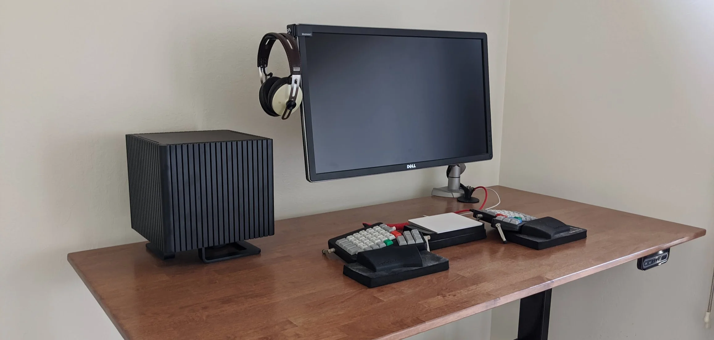The beautiful silent PC.
The imperative of working from home proved me wrong when the seemingly easy problem of sharing peripherals between a desktop and a laptop turned out to be more complicated than expected. It had the positive outcome of teaching me about the marvelous world of cables, USB, DisplayPort, DisplayLink and Thunderbolt.
USB can't
My first solution was based on a USB stack with a USB 3 hub supporting 4k60Hz over DisplayPort. Plenty of such devices are advertised on Amazon.
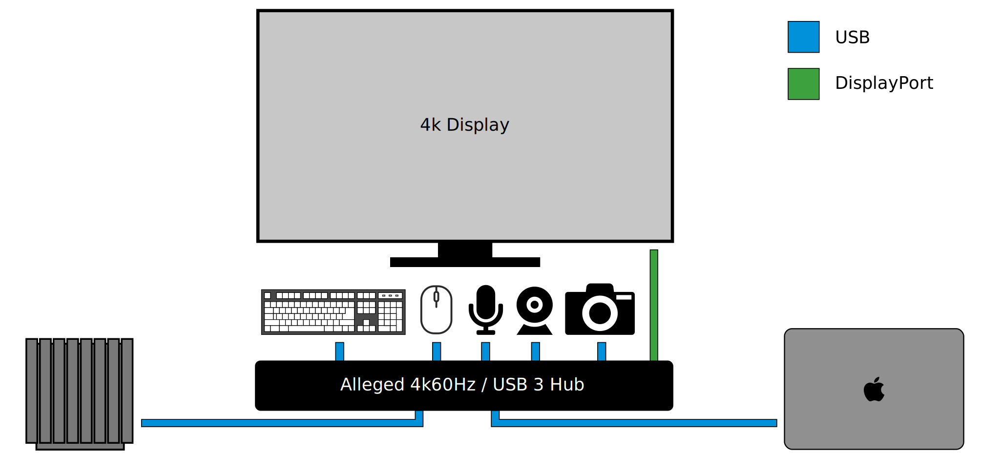USB solution.
Sadly it turned out that USB 3.1 and Display Port 1.2 hardware could not do that. As Steve Chamberlin detailed[2], there is just not enough bandwidth. The best one can hope for while relying soly on USB is 4k30Hz with 3.1 ports, 4k60Hz with 2.0 ports, or an exotic hub that will use compression via DisplayLink.
Steve's article mentioned how DP 1.4's DSC would help but none of my hardware supported it. Ditto USB-4.
The workaround was a less elegant system of two cables per machine with one to drive the monitor and one for the peripherals.
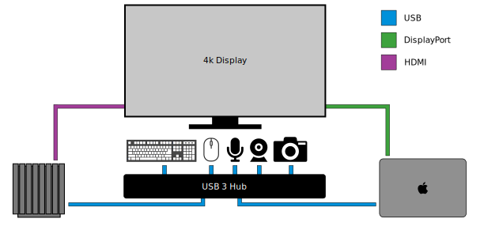USB with two cables per machine.
It kind of worked but with sporadic issues such as refusal to wake up when typing on the keyboard. Other times the same Ergodox EZ would find itself inexplicably unpowered. At that point it became painfully obvious that USB hub quality varied greatly. If I was going to spend more on a quality hub, why not take it to the next level?
ThunderBolt-3 does
According to Steve's article, Thunderbolt-3 can provide display, power, and peripherals on a single cable. I looked for hubs supporting 4k60 and USB-3 and read many good things about the CalDigit TS3 Plus. All I had to do was to find an ITX motherboard with Thunderbolt-3 capability.
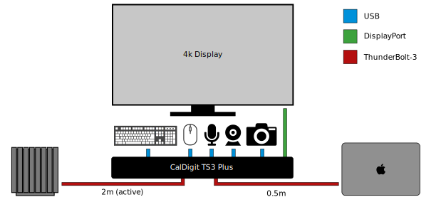Thunderbolt-3 solution[3].
There was only one motherboard on the market to fit the bill, the X570 Phantom Gaming-ITX/TB3[4] by ASRock.
Road to Thunderbolt-3
The Phantom Gaming ITX TB-3 has massive heat-sinks. The Southbridge even has a dedicated fan with a heat pipe (left of CPU). There is a secondary huge heat-sink with yet-to-be-determined purpose on the right of the CPU socket[5].
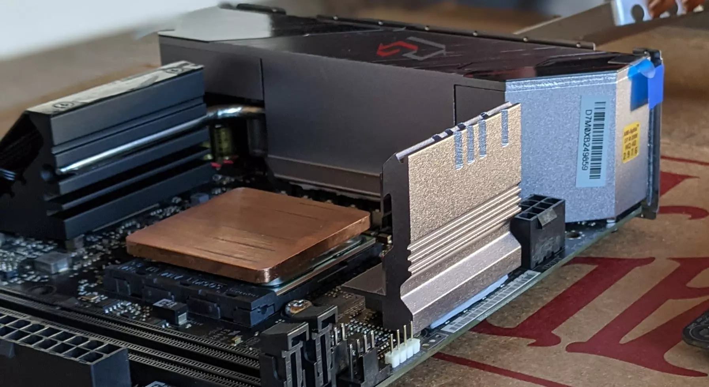The Southbridge chip (left of CPU) is HUGE. It even has its own fan and heat pipe.
The consequences of these radiators is that there is not enough clearance for the 105W capable LH6 heat pipes. The standard SH6 providing 65W dissipation were used instead.
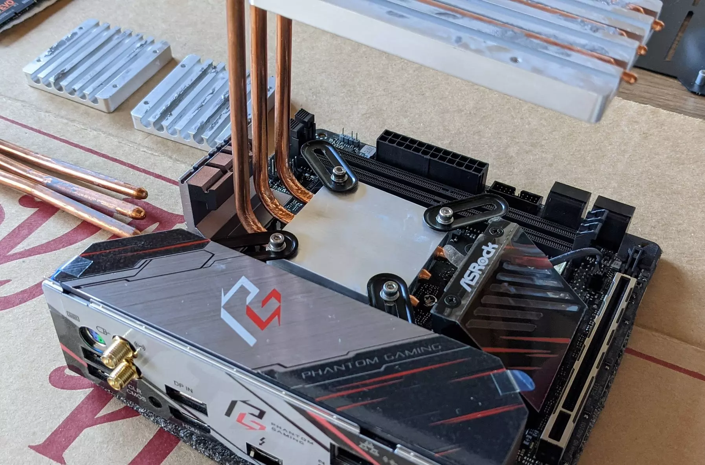Not enough clearance for the enhanced LH6 pipes. The SH6 will have to do the job.
Funky cables are involved in this build. The 2m (6ft) Thunderbolt-3 must be active in order to be 40Gb/s capable. Another weirdness is the 1 foot DP to DP cable required to connect the GPU DP-output to the Mobo DP-input. This is required to get the video stream on the Thunderbolt port. No doubt it will bring warm memories to those who had to do the same thing with VGA pass-through on their 3dFX.
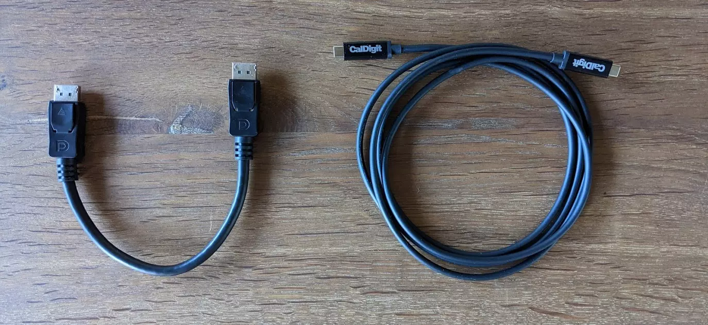One foot DP-DP cable and six foot active Thunderbolt-3 cable.
Thermals
Going from 105W to 65W dissipation was a concern. Pinning all 12 cores for 15mn showed a steady increase whereas 10 cores were stable around 7XoC. Combined to the temperature cliff once load diminishes, I don't expect to see any throttling.
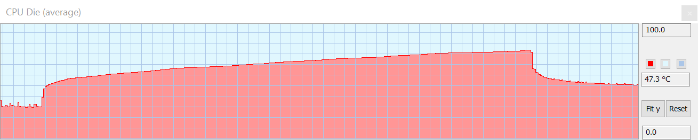CPU thermals with 12 cores pinned down.
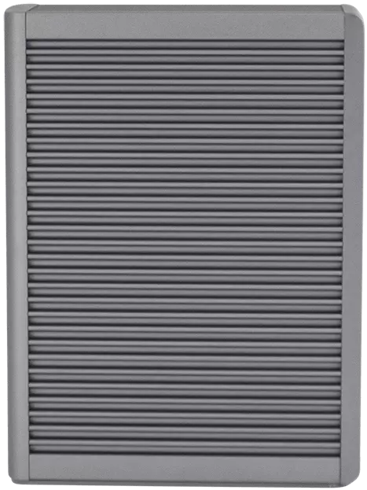 CalDigit TB3 side
A new thermal sensor appeared in HWiNFO64.EXE. SB, standing for "SouthBridge", seems to be doing a lot regardless of the load on the CPU or GPU. This component stabilizes at 75oC which, at rest, is the hottest component in the machine (CPU = 37oC, GPU = 39oC, and Mobo = 46oC). Even actively cooled build see the same kind of numbers so it does not look like the DB4 is at fault here.
Seeing such temperature on an IO chipset was a total surprise. But observing Caldigit TB3's large heat-sink makes me wonder if performing Thunderbolt-3 IO is simply just an order of magnitude more intensive than USB 3.2. Maybe ASRock motherboard is doing the best it can. But if that is the case, how does Apple cools down its fanless laptop?
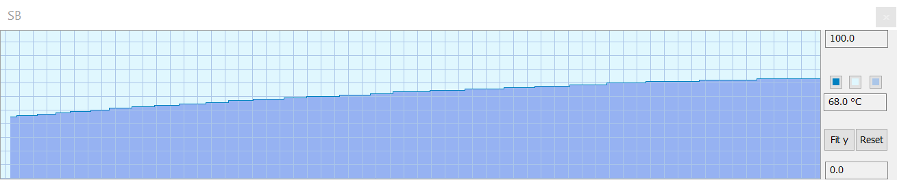Southbridge chipset thermals.
That chipset has a fan which does not play along with the fan-less-ness of the machine. Surprisingly, running it at 100% or disabling it with a "FAN-Tastic-Tuning" custom policy does not change the operating temperature. Setting the threshold to 80o is a bold move but that is how you get where no one has gone before. With this setting, I have never heard the fan run.
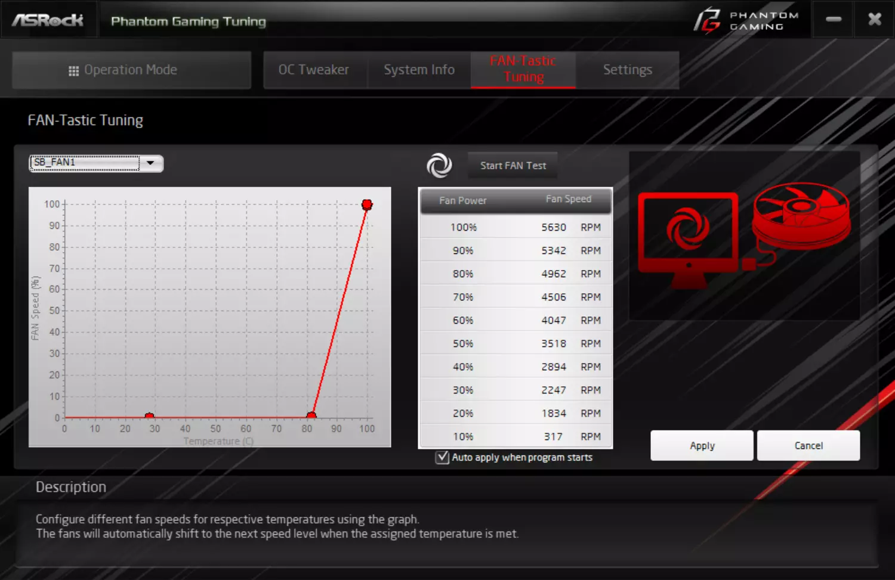Modern tools allow for designing your own fan strategy.
Result
The BSTB3-PC is definitely on the edge of the DB4 thermal frontier but it works reliably. I have been using it to browse the web, write this article, VC, program, and play lose at Starcraft 2 without issues so far.
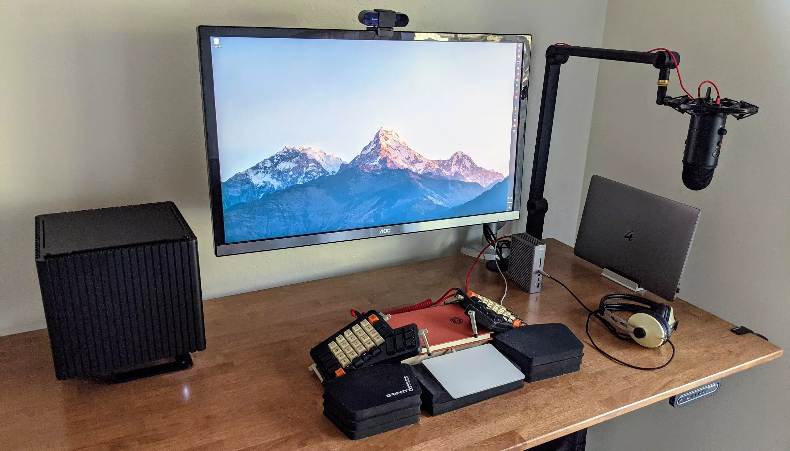The Beautiful Thunderbolt-3 Silent PC
Besides requiring a single cable, Thunderbolt-3 quadrupled the USB 3.1 bandwidth I was used to which was appreciable when transferring large amount of photos from my DSLR.
 Even the latest USB (3.2) is twice as slow as Thunderbolt-3.
Ironically, as I finished putting it together, Apple announced a fanless M1 Macbook Air which would have performed just as well, if not better. Nonetheless, I am proud of the result. It is a damn good looking silent computer. And this one is "Designed in Sunnyvale" baby!
Even the latest USB (3.2) is twice as slow as Thunderbolt-3.
Ironically, as I finished putting it together, Apple announced a fanless M1 Macbook Air which would have performed just as well, if not better. Nonetheless, I am proud of the result. It is a damn good looking silent computer. And this one is "Designed in Sunnyvale" baby!
References
*